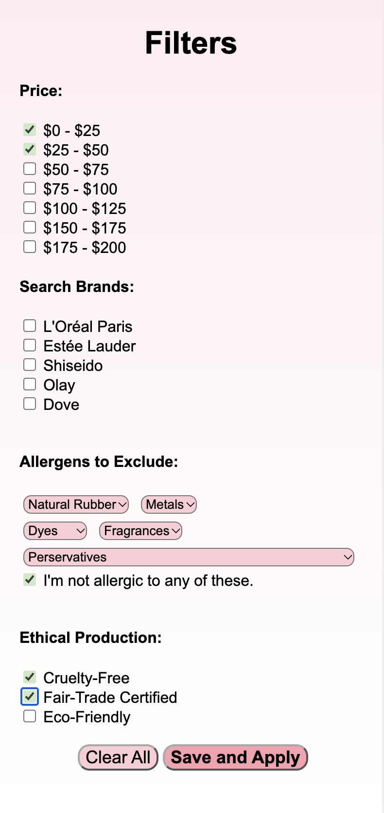
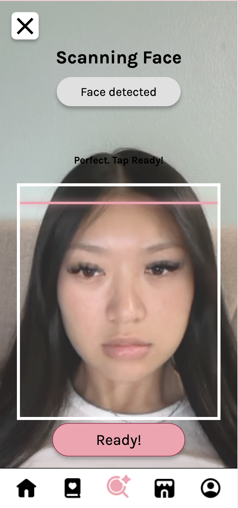
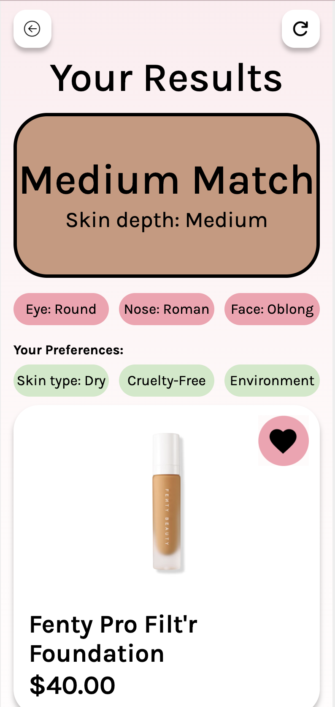

Add your preferences
in the Homepage for
skin type, styles, and
production
How it works

Add your preferences
in the Homepage for
skin type, styles, and
production

Put your face in frame
and press Ready!

Check out your results
and recommended
products!